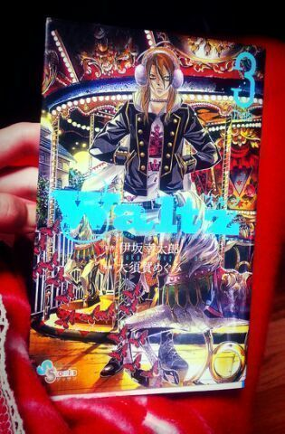

| 2014/01 11 Sat | 川村真洋 すべらない話みながら更新やよ〜 (*´∇｀*) ろってぃ- |
ほっほ〜い(*´ω｀*)
こんにちわん,関西の犬です。
ぁ, ろってぃ-だよ♪
この前 渋谷で偶然 千原ジュニアさんに会ったよ！
でもね、何も言葉が出てこなくって
「のっのっ ののの!!! のぎざかです(;゜゜)！」
って言ってしまった ´▽`あは
あとさっあとさっ、
コメント見ててきずいたんだけど
カヴァ★コラの時の並び順が偶然にも
歌選抜になってたみたいだね！！
ろってぃ-全然きずかなかったよ*^^*
まいやん,れいか,かずみ,ろってぃ-,みさ
ってなってたね！あは
ピョン ☆ミ
〜質問返し〜
☆どうゆう経緯でアダ名ついたの？
★あのねえ、あのアダ名には
深い意味も由来も何もなくってねえ うん
５人が 外国人やったら？と言うていで
５人で話し合って 生み出た名前 笑
かずみ も あみ も ちはる も 川後も
一応 ちゃんと 人の名前っぽくなってるけど
ミラクル・パッチ とか
もう、名前でも何でもないよね(σ≧▽≦)σ笑
「まには、ミラクル・パッチ！！
ミラクル・パッチです!!!って感じするから
だからミラクル・パッチで決まりね！」
ってなったの♪(ｏ・ω・)ノ))いひひ
☆最近TVで乃木坂を見ると、ろってぃ-が気になってしょうがない(´▽`) かずみんとろってぃ- W推しでいい？
★ 本間あ？？かずみんと W推し〜♪？
もちろん もちろんっ、お願いちますや〜
めっちゃ嬉しゅうキモチ!!
かずみんと 全握ペア 一緒なったら
是非 来てねん( ＾∀＾)
☆大好きやで！聞こえてますかー？笑
★もちろん いつも聞こえてます〜♪〜(・ε・* )
☆ろってぃ-は絵馬書いたの？
★絵馬は書いてないのw:-<
☆ろってぃ-はゲームとかやらないの？
★ゲームやらへんねん〜(;o;)
☆あんなぁ...乃木神社ってどこにあるん？ヾ(@゜▽゜@)ノ
★乃木坂駅 1番出口を出たら 隣に
乃木神社があるんよ.♪是非行ってきてね^^
☆46大吉、待ち受けてにしても良いか許可をください！！是非！！
★待受画面にすることを許可します。(済)Rotty.♪ウフ
☆一番お気に入りのニックネームは何かな？
★そりゃあねえ、ろってぃ-だよん.
☆ろってぃ-に相談なんだけど,
最近 も１人のメンバーとろってぃ-に引かれるんだけど
どっち推せばいい？
★あ〜 嬉しゅうなあ(/*´ω`*)/あ〜
ぢゃあ ろってぃ-からも相談していいかな？
Rotty夢に入りませんかあ(*´▽`)/？
待ってますね〜ん♪ニカッ
☆ろってぃ-は歌って踊ってる時が一番輝いてる！！またろってぃ-が歌ってくれる企画ないのぉ？
★たんきゅーです。たんきゅーです。
きっとある(・ω・) ろってぃ-は 歌います！！
☆カラオケ最高点数はいくつ？
★いつも採点しないから分かんないけど
中学生の頃の最高点数は98だったと思ふ。*^^*
はいっ、以上 ！！！
正月 実家で 読んでた漫画〜♪(ｏ・ω・)ノ))
『 ワルツ★ 』
絵が綺麗!!!

実家に帰れば 姉が色々 漫画
貸してくれるよ〜(*´∇｀*)
ぢゃっ、また更新するからね！
今日も皆のこと考えて寝よう( /〃▽〃)/
おやすみなさい... のし Rotty